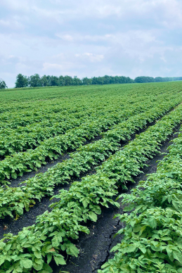

Семена картофеля суперэлиты по уникальной технологии in-vitro
Суперэлита — высокопродуктивные семена картофеля с оптимальным балансом цены и качества. При
правильном уходе дают стабильно высокий урожай семян элиты и столового картофеля на
протяжении 3–10 лет.
Меристемная суперэлита свободна от вирусов
Не успевают поражать
В апикальной меристеме (верхушка побегов или корней) нет сосудистой системы, поэтому
движение вирусов
от клетки к клетке происходит медленнее, чем интенсивный рост меристемы.
Не могут размножаться
Клетки апикальный меристемы активно делятся и блокируют репликацию вирусов.
Подавляются иммунитетом
Высокий уровень природных растительных гормонов
в верхушках побегов препятствует размножению вируса.
Мы, Экспериментальный Тепличный Комбинат «Меристемные культуры» более 30 лет
специализируемся на селекции и семеноводстве картофеля суперэлиты по технологии in-vitro.
Наши селекционеры вывели пять сортов картофеля повышенной урожайности:
Картофель «Меристемных культур» уже культивируют в 20 регионах России и странах СНГ. Все
сорта имеют сертификаты соответствия.
1100
клиентов
2000
тонн запасов
680
га
полей
15
сортов
Как мы выводим суперэлиту
Берем меристемную ткань картофеля (глазки)
и выращиваем в пробирке микрочеренки. Делим их на несколько частей
и доращиваем до микрорастений, которые высаживаем
в гидропонику.
Выращиваем из микрорастений миниклубни в гидропонной теплице
с искусственным климатом. Проверяем качество почвы и воздуха. Регулярно удобряем
и обрабатываем
от болезней.
Вручную следим за здоровьем каждого куста. Своевременно проводим фитосанитарные и
сортовые прочистки. Тщательно отбираем самые крепкие растения дальнейшего
культивирования.
Выращиваем картофель в богатых предгорных почвах, где соблюден оптимальный баланс
солнечного света, тепла и осадков. Получаем здоровые семена с высокой сортовой чистотой.

Получаем многократный рост урожая. Клубни суперэлиты имеют высокие товарность, лежкость,
массу корнеплода, а также сильный иммунитет
к большинству распространенных болезней.
9 причин купить у нас
Аккредитованная лаборатория
Наша лаборатория аккредитована в Федеральной службе по аккредитации (Росаккредитация).
Это означает, что все исследования и разработки ООО ЭТК «Меристемные культуры» в
сфере растениеводства соответствуют международным стандартам качества и безопасности.
Гидропонная теплица
Мы высаживаем рассаду картофеля теплице с гидропоникой и растим её по уникальной
системе
Адаптивного Биологизированного Земледелия (АБЗ). Принципы метода адаптированы для
возделывания картофеля в теплице с проточной гидропоникой. Они основаны на разумном
применении минерального питания в сочетании
с биопрепаратами. Это позволяет ежегодно собирать около 1,5 млн штук здоровых
миниклубней.
Поля в горах
Наши поля расположены
на высоте 1236 метров над уровнем моря, в экологически чистом месте недалеко от
Кисловодска. Посевные площади находятся в пространственной изоляции от других
посевов,
это гарантирует высокую сортовую чистоту картофеля
и минимизирует риски заражения посевов вирусами и бактериями.
Пятипольный севооборот
Мы применяем пятипольный севооборот, чтобы поддерживать плодородие земель, а также
исключить накопление вредных вирусов
и бактерий в почве. За год до посадки картофеля сеем рапс, горчицу. Помимо этого,
используем севооборотные культуры: пшеницу и гречиху.
Применение биопрепаратов
Биопрепараты – важный компонент используемой нами формулы Адаптивного
Биологизированного
Земледелия (АБЗ) наряду
с применением пестицидов
и принципиально новой технологией обработки почвы. Комплексный подход позволяет нам
поддерживать качество семян картофеля, собирать тройной урожай без увеличения
площади
полей и повышать плодородие почвы.
Ручная уборка и сортировка
Качество семенного картофеля определяется многими факторами, один из важнейших –
ручная
уборка в поле, которая позволяет минимизировать травмирование семенного материала.
Каждый клубень проходит через заботливые руки наших агрономов и разнорабочих. Они
проводят выбраковку семян уже во время сбора. На хранение после дополнительной
переборки
и сортировки по фракциям закладываются клубни высочайшего качества.
Контейнерное хранение
Мы храним семена картофеля
в контейнерах, чтобы свести
к минимуму повреждение продукции, а также локализовать возможное распространение
болезней. Кроме того, контейнеры хорошо проветриваются и долгое время сохраняют
картофель сухим
и свежим. Перед отгрузкой семян, учитывая запрос клиента,фасуем семена в любую тару
(сетки, бигбэги, контейнеры) или отгружаем их россыпью.
Документы на субсидии
Мы предоставляем пакет документов, необходимых для получения государственных
субсидий на
производство картофеля. Финансовая поддержка Вашего бизнеса начинается с покупки
наших
семян.
Гарантия чистоты

Наша продукция имеет сертификат качества семенного материала ГОСТ 33996-2016. Кроме
того, мы выдаем карантинный сертификат
на каждую вывозимую партию суперэлитного картофеля.
Покупая у нас, Вы можете быть уверены в подлинности и качестве семенного материала.
Отзывы
ПОЛЕЗНЫЕ СТАТЬИ
Купить семена суперэлиты
Выберите удобную дату и время для самовывоза!
Задайте вопросы по телефону или в WhatsApp
+79624024939
Евгения Борисовна